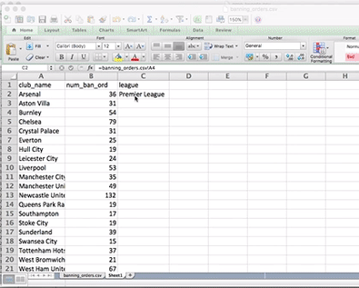
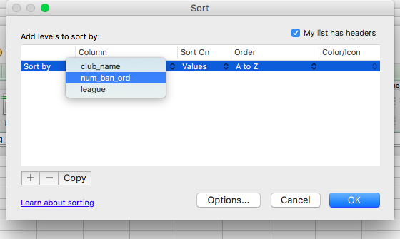

Chapter 10 Unit of analysis
We’ve been speaking (reading) about our variables (columns) a lot, but let’s also not forget to discuss the importance and meaning of our rows. We know by now that each row is an observation. So in the original data set about crimes, every single crime incident represents one row. Here are 3 crimes:
| X | Month | Reported.by | Falls.within | Longitude | Latitude | Location | LSOA.code | LSOA.name | Crime.type | Last.outcome.category | Context | borough | |
|---|---|---|---|---|---|---|---|---|---|---|---|---|---|
| 420226 | 420226 | 2017-05 | Greater Manchester Police | Greater Manchester Police | -2.563888 | 53.47228 | On or near Laburnum Road | E01006341 | Wigan 040D | Violence and sexual offences | Unable to prosecute suspect | NA | Wigan |
| 420227 | 420227 | 2017-05 | Greater Manchester Police | Greater Manchester Police | -2.570889 | 53.46971 | On or near Elton Close | E01006347 | Wigan 040E | Burglary | Investigation complete; no suspect identified | NA | Wigan |
| 420228 | 420228 | 2017-05 | Greater Manchester Police | Greater Manchester Police | -2.570947 | 53.46844 | On or near Fulwood Road | E01006347 | Wigan 040E | Other theft | Investigation complete; no suspect identified | NA | Wigan |
But we also saw above a case where we were looking at the number of crimes per borough. In that case, there were only 10 rows, because there are 10 boroughs, and we only had one observation per borough. Here is that data set again:
| borough | number.of.burglaries |
|---|---|
| Manchester | 8028 |
| Stockport | 3765 |
| Wigan | 3525 |
| Bolton | 3433 |
| Rochdale | 2958 |
| Oldham | 2834 |
| Tameside | 2754 |
| Salford | 2647 |
| Bury | 2106 |
| Trafford | 1795 |
What is the significance of this?
The unit of analysis is the major entity that is being analyzed in a study. It is the what or who that is being studied. Your unit of analysis will depend on the questions that you are going to be asking. You will always want your rows to represent your unit of analysis, so that you can collect data about these in the variables, and you can answer your questions.
Take this example:
We want to see whether boroughs with higher population count have higher numbers of crimes. To be able to explore this question, we need information about the number of crimes, and the number of the population in each…
…
…
… borough!
What about this one:
We want to see whether men consume more illegal drugs than women. To be able to explore this we need information about the gender and the drug consupmtion of each… …
…
…
… person!
Are you seeing the pattern? If you are comparing things, whether thats population and crime, or gender and drug consumption, you are comparing this between things. You are comparind population and crime rates between boroughs and you are comparing gender and drug consumption between people. These are your units of analysis.
10.1 Activity 4: Abstract-ing the unit of analysis
Let’s do an exercise. Read this abstract:
Over the last 40 years, the question of how crime varies across places has gotten greater attention. At the same time, as data and computing power have increased, the definition of a ‘place’ has shifted farther down the geographic cone of resolution. This has led many researchers to consider places as small as single addresses, group of addresses, face blocks or street blocks. Both cross-sectional and longitudinal studies of the spatial distribution of crime have consistently found crime is strongly concentrated at a small group of ‘micro’ places. Recent longitudinal studies have also revealed crime concentration across micro places is relatively stable over time. A major question that has not been answered in prior research is the degree of block to block variability at this local ‘micro’ level for all crime. To answer this question, we examine both temporal and spatial variation in crime across street blocks in the city of Seattle Washington. This is accomplished by applying trajectory analysis to establish groups of places that follow similar crime trajectories over 16 years. Then, using quantitative spatial statistics, we establish whether streets having the same temporal trajectory are collocated spatially or whether there is street to street variation in the temporal patterns of crime. In a surprising number of cases we find that individual street segments have trajectories which are unrelated to their immediately adjacent streets. This finding of heterogeneity suggests it may be particularly important to examine crime trends at very local geographic levels. At a policy level, our research reinforces the importance of initiatives like ‘hot spots policing’ which address specific streets within relatively small areas.
What is the unit of analysis here? Take a moment again, turn to the person next to you, or if you will, get up, stretch your legs, and go speak to someone on the other side of the room. Go! Get some steps in! Discuss what you think the unit of analysis is, and more importantly, why you think this! Then come back.
What did you decide on? The helpful thing here, is to look at what is the question they are asking - and what are they asking this about? The key sentence here is this one: “Indeed, just 86 street segments in Seattle include one-third of crime incidents in which a juvenile was arrested during the study period.” You can see that they are talking about the number of arrests per each street segment. So your unit of analysis is street segments.
Want to play again?
Try this one:
This paper examines the importance of neighbourhood context in explaining violence in London. Exploring in a new context Sampson’s work on the relationship between interdependent spatial patterns of concentrated disadvantage and crime, we assess whether collective efficacy (i.e. shared expectations about norms, values and goals, as well as the ability of members of the community to realize these goals) mediates the potential impact on violence of neighbourhood deprivation, residential stability and population heterogeneity. Reporting findings from a dataset based on face-to-face interviews with 60,000 individuals living in 4,700 London neighbourhoods, we find that collective efficacy is negatively related to police-recorded violence. But, unlike previous research, we find that collective efficacy does not mediate the statistical relationship between structural characteristics of the neighbourhood and violence. After finding that collective efficacy is unrelated to an alternative measure of neighbourhood violence, we discuss limitations and possible explanations for our results, before setting out plans for further research.
-Collective Efficacy, Deprivation and Violence in London
This one is a bit trciky. You can see they talk about how they collected data, in the sentence “Reporting findings from a dataset based on face-to-face interviews with 60,000 individuals living in 4,700 London neighbourhoods…”. But remember, we want to look at the questions they were asking - and you can see they are talking about neighbourhood violence. You can see this because they talk about looking into “statistical relationship between structural characteristics of the neighbourhood and violence”. Their unit of analysis is the neighbourhood.
Of course, you could have also cheated and read the paper. It will not always be obvious from the paper abstract what the unit of analysis is. Unless of course, you come across a helpful abstract like this one:
Objectives: To test the generalizability of previous crime and place trajectory analysis research on a different geographic location, Vancouver BC, and using alternative methods. Methods: A longitudinal analysis of a 16-year data set using the street segment as the unit of analysis. We use both the group-based trajectory model and a non-parametric cluster analysis technique termed k-means that does not require the same degree of assumptions as the group-based trajectory model. Results: The majority of street blocks in Vancouver evidence stable crime trends with a minority that reveal decreasing crime trends. The use of the k-means has a significant impact on the results of the analysis through a reduction in the number of classes, but the qualitative results are similar. Conclusions: The qualitative results of previous crime and place trajectory analyses are confirmed. Though the different trajectory analysis methods generate similar results, the non-parametric k-means model does significantly change the results. As such, any data set that does not satisfy the assumptions of the group-based trajectory model should use an alternative such as k-means.
-Crime and Place: A Longitudinal Examination of Street Segment Patterns in Vancouver, BC
But the most important thing here is that you understand what is meant by unit of analysis. It is not always the level at which your data is collected. For example, we have the crime data from police.uk where each row is one measurement. This is called individual level unit of analysis. But we can still use that to talk about the number of crimes per neighbourhood. But for us to be able to do that we need to convert that into a table where each row is the borough, we need to aggregate up, and just count the number of crimes in each one. Therefore this is an aggregate level unit of analysis.
Have a watch of this quick video here for some more examples and explanation.
Now, to copy over some values from one cell to the other, you simply use the = sign and name the cell you want to copy from. Cells are names by combining their column letter and row number. So the topmost left hand cell is A1. You can either type the name of the cell you want to copy from, or you can click on it. This is called a cell reference. Cell references allow users to include the values of external cells in formulas dynamically — rather than hard-coding particular values manually. To copy from another sheet, simply select from that sheet.
So in this case, let’s start by copying over the first cell. You just click in the first column of the first row, type =, and then click to the other tab, and select the first value for club name, in this case Arsenal. Once you clicked on the cell, just press Enter. Please note that you need to hit enter while still on the original sheet of data in order for it to fill the cells on your new sheet you are creating. If you type the =, go to the other sheet and click on the cell you want, then go back to the new sheet without having already hit enter, it will fill the cell with the wrong sheet’s info. So instead of it being =‘fbo-table-2’!A5 it will be =Sheet1!A5.

So excel makes our life easy, in that you can copy formatting from a cell to the one next to it, or the one under it, by clickin on the cell, and dragging the corner to the other cells, where we would like the formula copied to.
So if we want to copy over the cells next to the one that said ‘Arsenal’, we don’t need to go back to the first sheet. Like so:

Keep dragging until you get 0s as results. You don’t want that, so you can drag back up, to make sure you’re only copying data over, not empty cells. Now you want to copy over the league as well.
Click on the first row of the ‘league’ column, type = and go back to the first sheet and click on ‘Premier League’. The same process as we did for copying over ‘Arsenal’ above.
We can see that everything under the Premier League heading belongs to the Premier League. So the value for the ‘league’ variable is Premier league for all of these clubs. Therefore, we just need to replicate this for every one of these observations.
Now there is another neat trick here. If you were to drag the cell to copy the formatting again, you would be copying the cells below, rather than replicating ‘Premier League’, it would start to copy the cells below. Like this:

This is because excel adjusts the formatting for you to match what you are moving - you are using relative cell references. By default, Excel uses relative cell references, which change dynamically as they are copied and pasted around a sheet. For example, if a reference to cell A1 is copied and pasted one row down and one column to the right, the new reference will point to cell B2. This allows users to perform similar calculations on different ranges of cells quickly and easily. We made use of this function when copying over the club names and the associated number of banning orders.
In contrast, absolute cell references do not change when they are copied and pasted to other locations within a sheet. Absolute cell references can be used on either rows, columns, or both at the same time, and are indicated using the $ sign. For example, if a reference to cell $A$1 is copied and pasted one row down and one column to the right, the new reference will point to cell A1 — it won’t change at all, because both the row and column are locked. If a reference to cell $A1 is copied and pasted one row down and one column to the right, the new reference will point to cell A2 — only the row number will change, because the column letter is locked.
Here is a quick video to explain the use of the $ symbol
So in this case, we want to put in two $s because you want it to fix both column and row. So click on the cell where it now says Premier League and you will see the formula appear in the formula bar. Click in the formula bar, and insert two $s to change the formula from =banning_orders.csv!A4 to =banning_orders.csv!$A$4.

Now try to drag the Premier League cell again, to copy its value for all these clubs. You will see that it will work this time. Exciting!
So now you repeat this by clicking in the next cell, and copying over all the data, filling in the blanks, until your data set looks something like this:

OK now we can answer questions like this one:
- Which Club had the highest number of banning orders?
Tip: if you don’t want to go reading through them all and making sure that you didn’t miss one with an even higher value, you can sort your data. To sort by a specific variable, click on the ‘Data’ tab, then on the little black downwards pointing triange next to the sort icon:

This will allow you to select how you want to sort your data. Select the ‘Custom sort…’ option.

Now you can choose which variable you want to sort by:
And you can also select if you want to sort in ascending (smallest to largest) or descending (largest to smallest) order:


Ta-daa. This should reveal to you your result, something like this:

Is Newcastle United a surprising result? Also which leagues would you expect at the top. We see a lot of ‘Premier League’ and ‘Championship’, but there is also a team fro ‘League One’ (Bristol City) and one from ‘Football Conference3’. They appear to both be Bristol based teams. Is this interesting? Take a moment to discuss these results from this final task with someone. If you know anything about this raise your hand and tell me. I actually know nothing about football, so would be interested to hear any possible explanations for these results!
–> # Summary
In sum, you should now be more familiar with data than you were when you started. And you should be comfortable with the following terms:
- working directory
- data
- codebook/ data dictionary
- variable
- observation
- levels of measurement
- nominal, ordinal, numeric
- unit of analysis
From your readings you should also be comfortable with:
- reliability
- validity
- descriptive statistics
- inferential statistics